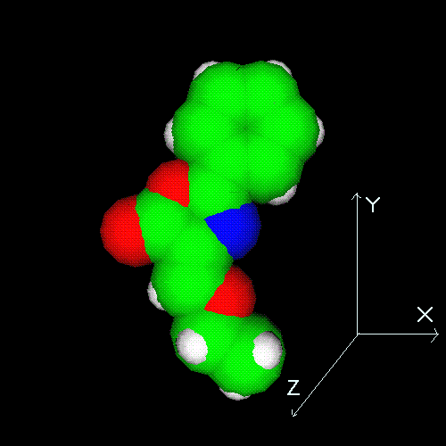

All rotations and translations are applied according to a fixed coordinate system where the "imaginary" coordinate system is located so that the positive x-axis points from the left side of the screen to the right side. The positive y-axis points up from the bottom of the screen and the positive z-axis points from the screen to your nose.
The molecular object on the screen can be manipulated (rotated) in the following way:
(1) Pressing the LEFT mouse button and moving the mouse in the
x-axis direction rotates the object around the y-axis.
Pressing the LEFT mouse button and moving the mouse in the
y-axis direction rotates the object around the x-axis.
(2) Pressing the RIGHT mouse button and moving the mouse in the
+y-axis direction zooms the object upwards and the -y-axis direction
zooms the object downwards.
